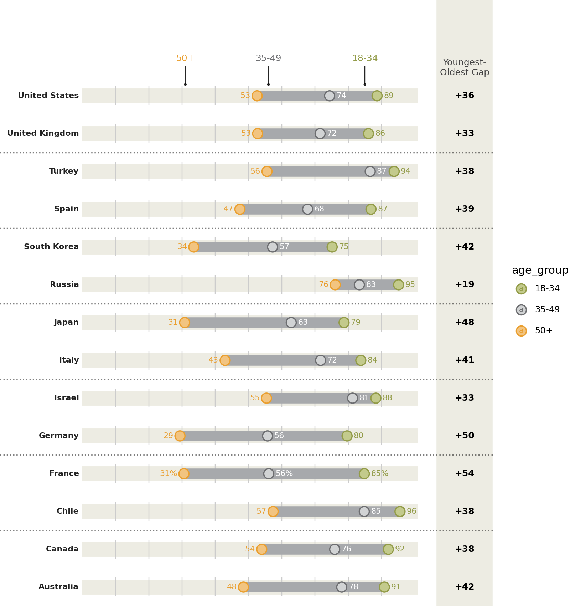
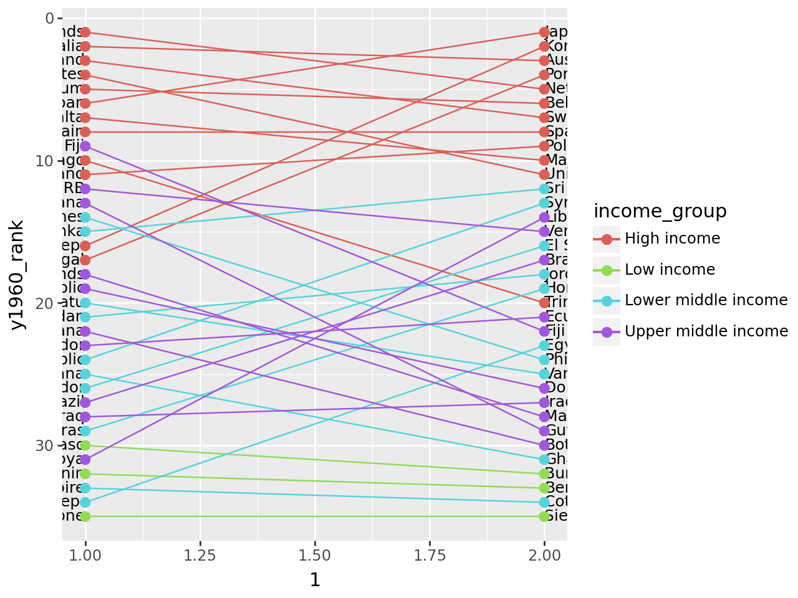

# NOTE: This notebook uses the polars package
import numpy as np
from plotnine import *
import polars as pl
from polars import colRanges of Similar Variables
In [1]:
Ranges of Similar Variables
Comparing the point to point difference of many similar variables
Read the data.
Source: Pew Research Global Attitudes Spring 2015
In [2]:
!head -n 20 "data/survey-social-media.csv"PSRAID,COUNTRY,Q145,Q146,Q70,Q74
100000,Ethiopia,Female,35,No,
100001,Ethiopia,Female,25,No,
100002,Ethiopia,Male,40,Don’t know,
100003,Ethiopia,Female,30,Don’t know,
100004,Ethiopia,Male,22,No,
100005,Ethiopia,Male,40,No,
100006,Ethiopia,Female,20,No,
100007,Ethiopia,Female,18,No,No
100008,Ethiopia,Male,50,No,
100009,Ethiopia,Male,35,No,
100010,Ethiopia,Female,20,No,
100011,Ethiopia,Female,30,Don’t know,
100012,Ethiopia,Male,60,No,
100013,Ethiopia,Male,18,No,
100014,Ethiopia,Male,40,No,
100015,Ethiopia,Male,28,Don’t know,
100016,Ethiopia,Female,55,Don’t know,
100017,Ethiopia,Male,30,Don’t know,
100018,Ethiopia,Female,22,No, In [3]:
columns = dict(
COUNTRY="country",
Q145="gender",
Q146="age",
Q70="use_internet",
Q74="use_social_media",
)
data = (
pl.scan_csv(
"data/survey-social-media.csv",
dtypes=dict(Q146=pl.Utf8),
)
.rename(columns)
.select(["country", "age", "use_social_media"])
.collect()
)
data.sample(10, seed=123)
shape: (10, 3)
| country | age | use_social_media |
|---|---|---|
| str | str | str |
| "India" | "23" | " " |
| "Pakistan" | "18" | " " |
| "Peru" | "39" | "Yes" |
| "Jordan" | "56" | " " |
| "United Kingdom… | "35" | "Yes" |
| "Chile" | "24" | "Yes" |
| "Israel" | "32" | "No" |
| "Pakistan" | "39" | "No" |
| "Chile" | "26" | "Yes" |
| "Nigeria" | "43" | "Yes" |
Create age groups for users of social media
In [4]:
yes_no = ["Yes", "No"]
valid_age_groups = ["18-34", "35-49", "50+"]
rdata = (
data.with_columns(
age_group=pl.when(col("age") <= "34")
.then(pl.lit("18-34"))
.when(col("age") <= "49")
.then(pl.lit("35-49"))
.when(col("age") < "98")
.then(pl.lit("50+"))
.otherwise(pl.lit("")),
country_count=pl.count().over("country"),
)
.filter(
col("age_group").is_in(valid_age_groups) & col("use_social_media").is_in(yes_no)
)
.group_by(["country", "age_group"])
.agg(
# social media use percentage
sm_use_percent=(col("use_social_media") == "Yes").sum() * 100 / pl.count(),
# social media question response rate
smq_response_rate=col("use_social_media").is_in(yes_no).sum()
* 100
/ col("country_count").first(),
)
.sort(["country", "age_group"])
)
rdata.head()
shape: (5, 4)
| country | age_group | sm_use_percent | smq_response_rate |
|---|---|---|---|
| str | str | f64 | f64 |
| "Argentina" | "18-34" | 90.883191 | 35.1 |
| "Argentina" | "35-49" | 84.40367 | 21.8 |
| "Argentina" | "50+" | 67.333333 | 15.0 |
| "Australia" | "18-34" | 90.862944 | 19.621514 |
| "Australia" | "35-49" | 78.04878 | 20.418327 |
Top 14 countries by response rate to the social media question.
In [5]:
def col_format(name, fmt):
# Format useing python formating
# for more control over
return col(name).map_elements(lambda x: fmt.format(x=x))
def float_to_str_round(name):
return col_format(name, "{x:.0f}")
n = 14
top = (
rdata.group_by("country")
.agg(r=col("smq_response_rate").sum())
.sort("r", descending=True)
.head(n)
)
top_countries = top["country"]
expr = float_to_str_round("sm_use_percent")
expr_pct = expr + "%"
point_data = rdata.filter(col("country").is_in(top_countries)).with_columns(
col("country").cast(pl.Categorical),
sm_use_percent_str=pl.when(col("country") == "France")
.then(expr_pct)
.otherwise(expr),
)
point_data.head()
shape: (5, 5)
| country | age_group | sm_use_percent | smq_response_rate | sm_use_percent_str |
|---|---|---|---|---|
| cat | str | f64 | f64 | str |
| "Australia" | "18-34" | 90.862944 | 19.621514 | "91" |
| "Australia" | "35-49" | 78.04878 | 20.418327 | "78" |
| "Australia" | "50+" | 48.479087 | 52.390438 | "48" |
| "Canada" | "18-34" | 92.063492 | 25.099602 | "92" |
| "Canada" | "35-49" | 75.925926 | 21.513944 | "76" |
In [6]:
segment_data = (
point_data.group_by("country")
.agg(
min=col("sm_use_percent").min(),
max=col("sm_use_percent").max(),
)
.with_columns(gap=(col("max") - col("min")))
.sort(
"gap",
)
.with_columns(
min_str=float_to_str_round("min"),
max_str=float_to_str_round("max"),
gap_str=float_to_str_round("gap"),
)
)
segment_data.head()
shape: (5, 7)
| country | min | max | gap | min_str | max_str | gap_str |
|---|---|---|---|---|---|---|
| cat | f64 | f64 | f64 | str | str | str |
| "Russia" | 76.07362 | 95.151515 | 19.077896 | "76" | "95" | "19" |
| "Israel" | 55.405405 | 88.311688 | 32.906283 | "55" | "88" | "33" |
| "United Kingdom… | 52.74463 | 86.096257 | 33.351627 | "53" | "86" | "33" |
| "United States" | 52.597403 | 88.669951 | 36.072548 | "53" | "89" | "36" |
| "Canada" | 53.986333 | 92.063492 | 38.077159 | "54" | "92" | "38" |
Format the floating point data that will be plotted into strings
First plot
In [7]:
# The right column (youngest-oldest gap) location
xgap = 112
(
ggplot()
# Range strip
+ geom_segment(
segment_data,
aes(x="min", xend="max", y="country", yend="country"),
size=6,
color="#a7a9ac",
)
# Age group markers
+ geom_point(
point_data,
aes("sm_use_percent", "country", color="age_group", fill="age_group"),
size=5,
stroke=0.7,
)
# Age group percentages
+ geom_text(
point_data.filter(col("age_group") == "50+"),
aes(
x="sm_use_percent-2",
y="country",
label="sm_use_percent_str",
color="age_group",
),
size=8,
ha="right",
)
+ geom_text(
point_data.filter(col("age_group") == "35-49"),
aes(x="sm_use_percent+2", y="country", label="sm_use_percent_str"),
size=8,
ha="left",
va="center",
color="white",
)
+ geom_text(
point_data.filter(col("age_group") == "18-34"),
aes(
x="sm_use_percent+2",
y="country",
label="sm_use_percent_str",
color="age_group",
),
size=8,
ha="left",
)
# gap difference
+ geom_text(
segment_data,
aes(x=xgap, y="country", label="gap_str"),
size=9,
fontweight="bold",
format_string="+{}",
)
)
Tweak it
In [8]:
# The right column (youngest-oldest gap) location
xgap = 115
# Gallery Plot
(
ggplot()
# Background Strips # new
+ geom_segment(
segment_data,
aes(y="country", yend="country"),
x=0,
xend=101,
size=8.5,
color="#edece3",
)
# vertical grid lines along the strips # new
+ annotate(
"segment",
x=list(range(10, 100, 10)) * n,
xend=list(range(10, 100, 10)) * n,
y=np.tile(np.arange(1, n + 1), 9) - 0.25,
yend=np.tile(np.arange(1, n + 1), 9) + 0.25,
color="#CCCCCC",
)
# Range strip
+ geom_segment(
segment_data,
aes(x="min", xend="max", y="country", yend="country"),
size=6,
color="#a7a9ac",
)
# Age group markers
+ geom_point(
point_data,
aes("sm_use_percent", "country", color="age_group", fill="age_group"),
size=5,
stroke=0.7,
)
# Age group percentages
+ geom_text(
point_data.filter(col("age_group") == "50+"),
aes(
x="sm_use_percent-2",
y="country",
label="sm_use_percent_str",
color="age_group",
),
size=8,
ha="right",
)
+ geom_text(
point_data.filter(col("age_group") == "35-49"),
aes(x="sm_use_percent+2", y="country", label="sm_use_percent_str"),
size=8,
ha="left",
va="center",
color="white",
)
+ geom_text(
point_data.filter(col("age_group") == "18-34"),
aes(
x="sm_use_percent+2",
y="country",
label="sm_use_percent_str",
color="age_group",
),
size=8,
ha="left",
)
# countries right-hand-size (instead of y-axis) # new
+ geom_text(
segment_data,
aes(y="country", label="country"),
x=-1,
size=8,
ha="right",
fontweight="bold",
color="#222222",
)
# gap difference
+ geom_vline(xintercept=xgap, color="#edece3", size=32) # new
+ geom_text(
segment_data,
aes(x=xgap, y="country", label="gap_str"),
size=9,
fontweight="bold",
format_string="+{}",
)
# Annotations # new
+ annotate("text", x=31, y=n + 1.1, label="50+", size=9, color="#ea9f2f", va="top")
+ annotate(
"text", x=56, y=n + 1.1, label="35-49", size=9, color="#6d6e71", va="top"
)
+ annotate(
"text", x=85, y=n + 1.1, label="18-34", size=9, color="#939c49", va="top"
)
+ annotate(
"text",
x=xgap,
y=n + 0.5,
label="Youngest-\nOldest Gap",
size=9,
color="#444444",
va="bottom",
ha="center",
)
+ annotate("point", x=[31, 56, 85], y=n + 0.3, alpha=0.85, stroke=0)
+ annotate(
"segment",
x=[31, 56, 85],
xend=[31, 56, 85],
y=n + 0.3,
yend=n + 0.8,
alpha=0.85,
)
+ annotate(
"hline",
yintercept=[x + 0.5 for x in range(2, n, 2)],
alpha=0.5,
linetype="dotted",
size=0.7,
)
# Better spacing and color # new
+ scale_x_continuous(limits=(-18, xgap + 2))
+ scale_y_discrete(expand=(0, 0.25, 0.1, 0))
+ scale_fill_manual(values=["#c3ca8c", "#d1d3d4", "#f2c480"])
+ scale_color_manual(values=["#939c49", "#6d6e71", "#ea9f2f"])
+ guides(color=None, fill=None)
+ theme_void()
+ theme(figure_size=(8, 8.5))
)
Instead of looking at this plot as having a country variable on the y-axis and a percentage variable on the x-axis, we can view it as having vertically stacked up many indepedent variables, the values of which have a similar scale.
Protip: Save a pdf file.
Change in Rank
Comparing a group of ranked items at two different times
Read the data.
Source: World Bank - Infanct Mortality Rate (per 1,000 live births)b
In [9]:
data = pl.read_csv(
"data/API_SP.DYN.IMRT.IN_DS2_en_csv_v2/API_SP.DYN.IMRT.IN_DS2_en_csv_v2.csv",
skip_rows=4,
null_values="",
truncate_ragged_lines=True,
)
# Columns as valid python variables
year_columns = {c: f"y{c}" for c in data.columns if c[:2] in {"19", "20"}}
data = data.rename(
{"Country Name": "country", "Country Code": "code", **year_columns}
).drop(["Indicator Name", "Indicator Code"])
data.head()
shape: (5, 59)
| country | code | y1960 | y1961 | y1962 | y1963 | y1964 | y1965 | y1966 | y1967 | y1968 | y1969 | y1970 | y1971 | y1972 | y1973 | y1974 | y1975 | y1976 | y1977 | y1978 | y1979 | y1980 | y1981 | y1982 | y1983 | y1984 | y1985 | y1986 | y1987 | y1988 | y1989 | y1990 | y1991 | y1992 | y1993 | y1994 | y1995 | y1996 | y1997 | y1998 | y1999 | y2000 | y2001 | y2002 | y2003 | y2004 | y2005 | y2006 | y2007 | y2008 | y2009 | y2010 | y2011 | y2012 | y2013 | y2014 | y2015 | y2016 |
|---|---|---|---|---|---|---|---|---|---|---|---|---|---|---|---|---|---|---|---|---|---|---|---|---|---|---|---|---|---|---|---|---|---|---|---|---|---|---|---|---|---|---|---|---|---|---|---|---|---|---|---|---|---|---|---|---|---|---|
| str | str | f64 | f64 | f64 | f64 | f64 | f64 | f64 | f64 | f64 | f64 | f64 | f64 | f64 | f64 | f64 | f64 | f64 | f64 | f64 | f64 | f64 | f64 | f64 | f64 | f64 | f64 | f64 | f64 | f64 | f64 | f64 | f64 | f64 | f64 | f64 | f64 | f64 | f64 | f64 | f64 | f64 | f64 | f64 | f64 | f64 | f64 | f64 | f64 | f64 | f64 | f64 | f64 | f64 | f64 | f64 | f64 | str |
| "Aruba" | "ABW" | null | null | null | null | null | null | null | null | null | null | null | null | null | null | null | null | null | null | null | null | null | null | null | null | null | null | null | null | null | null | null | null | null | null | null | null | null | null | null | null | null | null | null | null | null | null | null | null | null | null | null | null | null | null | null | null | null |
| "Afghanistan" | "AFG" | null | 240.5 | 236.3 | 232.3 | 228.5 | 224.6 | 220.7 | 217.0 | 213.3 | 209.8 | 206.1 | 202.2 | 198.2 | 194.3 | 190.3 | 186.6 | 182.6 | 178.7 | 174.5 | 170.4 | 166.1 | 161.8 | 157.5 | 153.2 | 148.7 | 144.5 | 140.2 | 135.7 | 131.3 | 126.8 | 122.5 | 118.3 | 114.4 | 110.9 | 107.7 | 105.0 | 102.7 | 100.7 | 98.9 | 97.2 | 95.4 | 93.4 | 91.2 | 89.0 | 86.7 | 84.4 | 82.3 | 80.4 | 78.6 | 76.8 | 75.1 | 73.4 | 71.7 | 69.9 | 68.1 | 66.3 | null |
| "Angola" | "AGO" | null | null | null | null | null | null | null | null | null | null | null | null | null | null | null | null | null | null | null | null | 138.3 | 137.5 | 136.8 | 136.0 | 135.3 | 134.9 | 134.4 | 134.1 | 133.8 | 133.6 | 133.5 | 133.5 | 133.5 | 133.4 | 133.2 | 132.8 | 132.3 | 131.5 | 130.6 | 129.5 | 128.3 | 126.9 | 125.5 | 124.1 | 122.8 | 121.2 | 119.4 | 117.1 | 114.7 | 112.2 | 109.6 | 106.8 | 104.1 | 101.4 | 98.8 | 96.0 | null |
| "Albania" | "ALB" | null | null | null | null | null | null | null | null | null | null | null | null | null | null | null | null | null | null | 73.0 | 68.4 | 64.0 | 59.9 | 56.1 | 52.4 | 49.1 | 45.9 | 43.2 | 40.8 | 38.6 | 36.7 | 35.1 | 33.7 | 32.5 | 31.4 | 30.3 | 29.1 | 27.9 | 26.8 | 25.5 | 24.4 | 23.2 | 22.1 | 21.0 | 20.0 | 19.1 | 18.3 | 17.4 | 16.7 | 16.0 | 15.4 | 14.8 | 14.3 | 13.8 | 13.3 | 12.9 | 12.5 | null |
| "Andorra" | "AND" | null | null | null | null | null | null | null | null | null | null | null | null | null | null | null | null | null | null | null | null | null | null | null | null | null | null | null | null | null | null | 7.5 | 7.0 | 6.5 | 6.1 | 5.6 | 5.2 | 5.0 | 4.6 | 4.3 | 4.1 | 3.9 | 3.7 | 3.5 | 3.3 | 3.2 | 3.1 | 2.9 | 2.8 | 2.7 | 2.6 | 2.5 | 2.4 | 2.3 | 2.2 | 2.1 | 2.1 | null |
The data includes regional aggregates. To tell apart the regional aggregates we need the metadata. Every row in the data table has a corresponding row in the metadata table. Where the row has regional aggregate data, the Region column in the metadata table is NaN.
In [10]:
def ordered_categorical(s, categories=None):
"""
Create a categorical ordered according to the categories
"""
name = getattr(s, "name", "")
if categories is None:
return pl.Series(name, s).cast(pl.Categorical)
with pl.StringCache():
pl.Series(categories).cast(pl.Categorical)
return pl.Series(name, s).cast(pl.Categorical)
columns = {"Country Code": "code", "Region": "region", "IncomeGroup": "income_group"}
metadata = (
pl.scan_csv(
"data/API_SP.DYN.IMRT.IN_DS2_en_csv_v2/Metadata_Country_API_SP.DYN.IMRT.IN_DS2_en_csv_v2.csv"
)
.rename(columns)
.select(list(columns.values()))
.filter(
# Drop the regional aggregate information
(col("region") != "") & (col("income_group") != "")
)
.collect()
)
cat_order = ["High income", "Upper middle income", "Lower middle income", "Low income"]
metadata = metadata.with_columns(
ordered_categorical(metadata["income_group"], cat_order)
)
metadata.head(10)
shape: (10, 3)
| code | region | income_group |
|---|---|---|
| str | str | cat |
| "ABW" | "Latin America … | "High income" |
| "AFG" | "South Asia" | "Low income" |
| "AGO" | "Sub-Saharan Af… | "Lower middle i… |
| "ALB" | "Europe & Centr… | "Upper middle i… |
| "AND" | "Europe & Centr… | "High income" |
| "ARE" | "Middle East & … | "High income" |
| "ARG" | "Latin America … | "Upper middle i… |
| "ARM" | "Europe & Centr… | "Lower middle i… |
| "ASM" | "East Asia & Pa… | "Upper middle i… |
| "ATG" | "Latin America … | "High income" |
Remove the regional aggregates, to create a table with only country data
In [11]:
country_data = data.join(metadata, on="code")
country_data.head()
shape: (5, 61)
| country | code | y1960 | y1961 | y1962 | y1963 | y1964 | y1965 | y1966 | y1967 | y1968 | y1969 | y1970 | y1971 | y1972 | y1973 | y1974 | y1975 | y1976 | y1977 | y1978 | y1979 | y1980 | y1981 | y1982 | y1983 | y1984 | y1985 | y1986 | y1987 | y1988 | y1989 | y1990 | y1991 | y1992 | y1993 | y1994 | y1995 | y1996 | y1997 | y1998 | y1999 | y2000 | y2001 | y2002 | y2003 | y2004 | y2005 | y2006 | y2007 | y2008 | y2009 | y2010 | y2011 | y2012 | y2013 | y2014 | y2015 | y2016 | region | income_group |
|---|---|---|---|---|---|---|---|---|---|---|---|---|---|---|---|---|---|---|---|---|---|---|---|---|---|---|---|---|---|---|---|---|---|---|---|---|---|---|---|---|---|---|---|---|---|---|---|---|---|---|---|---|---|---|---|---|---|---|---|---|
| str | str | f64 | f64 | f64 | f64 | f64 | f64 | f64 | f64 | f64 | f64 | f64 | f64 | f64 | f64 | f64 | f64 | f64 | f64 | f64 | f64 | f64 | f64 | f64 | f64 | f64 | f64 | f64 | f64 | f64 | f64 | f64 | f64 | f64 | f64 | f64 | f64 | f64 | f64 | f64 | f64 | f64 | f64 | f64 | f64 | f64 | f64 | f64 | f64 | f64 | f64 | f64 | f64 | f64 | f64 | f64 | f64 | str | str | cat |
| "Aruba" | "ABW" | null | null | null | null | null | null | null | null | null | null | null | null | null | null | null | null | null | null | null | null | null | null | null | null | null | null | null | null | null | null | null | null | null | null | null | null | null | null | null | null | null | null | null | null | null | null | null | null | null | null | null | null | null | null | null | null | null | "Latin America … | "High income" |
| "Afghanistan" | "AFG" | null | 240.5 | 236.3 | 232.3 | 228.5 | 224.6 | 220.7 | 217.0 | 213.3 | 209.8 | 206.1 | 202.2 | 198.2 | 194.3 | 190.3 | 186.6 | 182.6 | 178.7 | 174.5 | 170.4 | 166.1 | 161.8 | 157.5 | 153.2 | 148.7 | 144.5 | 140.2 | 135.7 | 131.3 | 126.8 | 122.5 | 118.3 | 114.4 | 110.9 | 107.7 | 105.0 | 102.7 | 100.7 | 98.9 | 97.2 | 95.4 | 93.4 | 91.2 | 89.0 | 86.7 | 84.4 | 82.3 | 80.4 | 78.6 | 76.8 | 75.1 | 73.4 | 71.7 | 69.9 | 68.1 | 66.3 | null | "South Asia" | "Low income" |
| "Angola" | "AGO" | null | null | null | null | null | null | null | null | null | null | null | null | null | null | null | null | null | null | null | null | 138.3 | 137.5 | 136.8 | 136.0 | 135.3 | 134.9 | 134.4 | 134.1 | 133.8 | 133.6 | 133.5 | 133.5 | 133.5 | 133.4 | 133.2 | 132.8 | 132.3 | 131.5 | 130.6 | 129.5 | 128.3 | 126.9 | 125.5 | 124.1 | 122.8 | 121.2 | 119.4 | 117.1 | 114.7 | 112.2 | 109.6 | 106.8 | 104.1 | 101.4 | 98.8 | 96.0 | null | "Sub-Saharan Af… | "Lower middle i… |
| "Albania" | "ALB" | null | null | null | null | null | null | null | null | null | null | null | null | null | null | null | null | null | null | 73.0 | 68.4 | 64.0 | 59.9 | 56.1 | 52.4 | 49.1 | 45.9 | 43.2 | 40.8 | 38.6 | 36.7 | 35.1 | 33.7 | 32.5 | 31.4 | 30.3 | 29.1 | 27.9 | 26.8 | 25.5 | 24.4 | 23.2 | 22.1 | 21.0 | 20.0 | 19.1 | 18.3 | 17.4 | 16.7 | 16.0 | 15.4 | 14.8 | 14.3 | 13.8 | 13.3 | 12.9 | 12.5 | null | "Europe & Centr… | "Upper middle i… |
| "Andorra" | "AND" | null | null | null | null | null | null | null | null | null | null | null | null | null | null | null | null | null | null | null | null | null | null | null | null | null | null | null | null | null | null | 7.5 | 7.0 | 6.5 | 6.1 | 5.6 | 5.2 | 5.0 | 4.6 | 4.3 | 4.1 | 3.9 | 3.7 | 3.5 | 3.3 | 3.2 | 3.1 | 2.9 | 2.8 | 2.7 | 2.6 | 2.5 | 2.4 | 2.3 | 2.2 | 2.1 | 2.1 | null | "Europe & Centr… | "High income" |
We are interested in the changes in rank between 1960 and 2015. To plot a reasonable sized graph, we randomly sample 35 countries.
In [12]:
sampled_data = (
country_data.drop_nulls(subset=["y1960", "y2015"])
.sample(n=35, seed=123)
.with_columns(
y1960_rank=col("y1960").rank(method="ordinal").cast(pl.Int64),
y2015_rank=col("y2015").rank(method="ordinal").cast(pl.Int64),
)
.sort("y2015_rank", descending=True)
)
sampled_data.head()
shape: (5, 63)
| country | code | y1960 | y1961 | y1962 | y1963 | y1964 | y1965 | y1966 | y1967 | y1968 | y1969 | y1970 | y1971 | y1972 | y1973 | y1974 | y1975 | y1976 | y1977 | y1978 | y1979 | y1980 | y1981 | y1982 | y1983 | y1984 | y1985 | y1986 | y1987 | y1988 | y1989 | y1990 | y1991 | y1992 | y1993 | y1994 | y1995 | y1996 | y1997 | y1998 | y1999 | y2000 | y2001 | y2002 | y2003 | y2004 | y2005 | y2006 | y2007 | y2008 | y2009 | y2010 | y2011 | y2012 | y2013 | y2014 | y2015 | y2016 | region | income_group | y1960_rank | y2015_rank |
|---|---|---|---|---|---|---|---|---|---|---|---|---|---|---|---|---|---|---|---|---|---|---|---|---|---|---|---|---|---|---|---|---|---|---|---|---|---|---|---|---|---|---|---|---|---|---|---|---|---|---|---|---|---|---|---|---|---|---|---|---|---|---|
| str | str | f64 | f64 | f64 | f64 | f64 | f64 | f64 | f64 | f64 | f64 | f64 | f64 | f64 | f64 | f64 | f64 | f64 | f64 | f64 | f64 | f64 | f64 | f64 | f64 | f64 | f64 | f64 | f64 | f64 | f64 | f64 | f64 | f64 | f64 | f64 | f64 | f64 | f64 | f64 | f64 | f64 | f64 | f64 | f64 | f64 | f64 | f64 | f64 | f64 | f64 | f64 | f64 | f64 | f64 | f64 | f64 | str | str | cat | i64 | i64 |
| "Sierra Leone" | "SLE" | 223.6 | 220.5 | 217.5 | 214.2 | 211.0 | 207.6 | 204.2 | 200.8 | 197.3 | 194.1 | 191.0 | 188.0 | 185.2 | 182.6 | 180.0 | 177.5 | 175.3 | 173.2 | 171.2 | 169.2 | 167.3 | 165.6 | 164.1 | 162.8 | 161.5 | 160.4 | 159.4 | 158.3 | 157.6 | 157.0 | 156.5 | 156.1 | 155.7 | 155.2 | 154.5 | 153.4 | 152.0 | 150.1 | 148.1 | 145.8 | 143.3 | 140.5 | 137.7 | 134.6 | 131.4 | 128.1 | 124.5 | 120.5 | 116.2 | 111.7 | 107.0 | 102.3 | 97.9 | 93.8 | 90.2 | 87.1 | null | "Sub-Saharan Af… | "Low income" | 35 | 35 |
| "Cote d'Ivoire" | "CIV" | 208.4 | 203.0 | 197.7 | 192.8 | 188.0 | 183.3 | 178.7 | 174.2 | 169.9 | 165.4 | 161.0 | 156.4 | 151.3 | 146.1 | 140.7 | 135.1 | 129.7 | 124.7 | 120.2 | 116.6 | 113.7 | 111.4 | 109.5 | 108.0 | 106.9 | 106.1 | 105.5 | 105.2 | 104.9 | 104.9 | 104.9 | 104.8 | 104.7 | 104.7 | 104.6 | 104.4 | 104.0 | 103.3 | 102.3 | 101.0 | 99.5 | 97.7 | 95.7 | 93.6 | 91.4 | 88.9 | 86.7 | 84.1 | 81.3 | 79.0 | 76.9 | 75.0 | 72.8 | 70.6 | 68.5 | 66.6 | null | "Sub-Saharan Af… | "Lower middle i… | 33 | 34 |
| "Benin" | "BEN" | 186.9 | 183.9 | 180.6 | 177.1 | 173.6 | 170.2 | 166.8 | 164.0 | 161.5 | 159.2 | 157.1 | 154.9 | 152.5 | 149.8 | 146.8 | 143.5 | 140.1 | 136.7 | 133.6 | 130.9 | 128.7 | 126.6 | 124.7 | 122.8 | 120.9 | 118.9 | 116.9 | 114.8 | 112.6 | 110.4 | 108.0 | 105.6 | 103.2 | 100.9 | 98.9 | 97.2 | 95.6 | 94.2 | 92.7 | 91.1 | 89.3 | 87.4 | 85.2 | 83.0 | 80.8 | 78.8 | 76.9 | 75.2 | 73.7 | 72.3 | 71.0 | 69.8 | 68.5 | 67.2 | 65.7 | 64.2 | null | "Sub-Saharan Af… | "Low income" | 32 | 33 |
| "Burkina Faso" | "BFA" | 161.3 | 159.4 | 157.5 | 155.8 | 154.3 | 153.0 | 151.8 | 150.9 | 150.2 | 149.7 | 149.3 | 148.5 | 147.1 | 144.6 | 141.0 | 136.6 | 131.9 | 127.4 | 123.4 | 120.2 | 117.6 | 115.6 | 113.9 | 112.4 | 110.8 | 109.0 | 107.1 | 105.3 | 103.8 | 102.9 | 102.5 | 102.3 | 102.4 | 102.4 | 102.1 | 101.4 | 100.5 | 99.4 | 98.3 | 97.3 | 96.2 | 95.0 | 93.4 | 91.4 | 88.9 | 86.0 | 82.7 | 79.2 | 75.8 | 72.5 | 69.7 | 67.3 | 65.4 | 63.7 | 62.2 | 60.9 | null | "Sub-Saharan Af… | "Low income" | 30 | 32 |
| "Ghana" | "GHA" | 125.1 | 123.8 | 122.7 | 121.8 | 121.2 | 120.8 | 120.7 | 120.6 | 120.6 | 120.5 | 120.1 | 119.5 | 118.2 | 116.5 | 114.2 | 111.5 | 108.7 | 106.0 | 103.8 | 102.1 | 100.9 | 100.1 | 99.3 | 98.4 | 96.8 | 94.7 | 92.1 | 89.0 | 85.8 | 82.7 | 79.8 | 77.5 | 75.6 | 74.1 | 73.0 | 72.0 | 71.0 | 69.8 | 68.4 | 66.7 | 64.9 | 63.0 | 61.2 | 59.6 | 58.1 | 56.8 | 55.6 | 54.4 | 53.1 | 51.7 | 50.2 | 48.6 | 47.0 | 45.5 | 44.2 | 42.8 | null | "Sub-Saharan Af… | "Lower middle i… | 25 | 31 |
First graph
In [13]:
(
ggplot(sampled_data)
+ geom_text(aes(1, "y1960_rank", label="country"), ha="right", size=9)
+ geom_text(aes(2, "y2015_rank", label="country"), ha="left", size=9)
+ geom_point(aes(1, "y1960_rank", color="income_group"), size=2.5)
+ geom_point(aes(2, "y2015_rank", color="income_group"), size=2.5)
+ geom_segment(
aes(x=1, y="y1960_rank", xend=2, yend="y2015_rank", color="income_group")
)
+ scale_y_reverse()
)
It has the form we want, but we need to tweak it.
In [14]:
# Text colors
black1 = "#252525"
black2 = "#222222"
# Gallery Plot
(
ggplot(sampled_data)
# Slight modifications for the original lines,
# 1. Nudge the text to either sides of the points
# 2. Alter the color and alpha values
+ geom_text(
aes(1, "y1960_rank", label="country"),
nudge_x=-0.05,
ha="right",
size=9,
color=black1,
)
+ geom_text(
aes(2, "y2015_rank", label="country"),
nudge_x=0.05,
ha="left",
size=9,
color=black1,
)
+ geom_point(aes(1, "y1960_rank", color="income_group"), size=2.5, alpha=0.7)
+ geom_point(aes(2, "y2015_rank", color="income_group"), size=2.5, alpha=0.7)
+ geom_segment(
aes(x=1, y="y1960_rank", xend=2, yend="y2015_rank", color="income_group"),
alpha=0.7,
)
# Text Annotations
+ annotate(
"text",
x=1,
y=0,
label="Rank in 1960",
fontweight="bold",
ha="right",
size=10,
color=black2,
)
+ annotate(
"text",
x=2,
y=0,
label="Rank in 2015",
fontweight="bold",
ha="left",
size=10,
color=black2,
)
+ annotate(
"text", x=1.5, y=0, label="Lines show change in rank", size=9, color=black1
)
+ annotate(
"label",
x=1.5,
y=3,
label="Lower infant\ndeath rates",
size=9,
color=black1,
label_size=0,
fontstyle="italic",
)
+ annotate(
"label",
x=1.5,
y=33,
label="Higher infant\ndeath rates",
size=9,
color=black1,
label_size=0,
fontstyle="italic",
)
# Prevent country names from being chopped off
+ lims(x=(0.35, 2.65))
+ labs(color="Income Group")
# Countries with lower rates on top
+ scale_y_reverse()
# Change colors
+ scale_color_brewer(type="qual", palette=2)
# Removes all decorations
+ theme_void()
# Changing the figure size prevents the country names from squishing up
+ theme(figure_size=(8, 11))
)